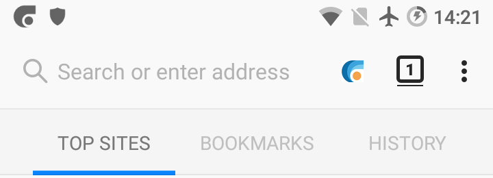
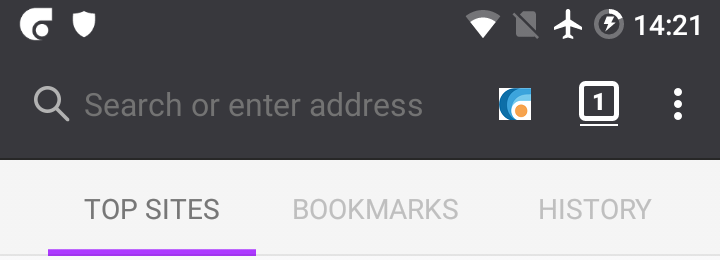

Using public or private browsing¶
As described in a previous section, CENO has two different modes of operation depending on whether you want to share with others the content that you browse (public browsing) or not (private browsing).
This setting applies to each tab that you open in the browser, i.e. you can have public browsing tabs and private browsing tabs. The default in CENO whenever you start it or open a new tab (using New tab in the app’s main menu) is to use public browsing. To open a new tab in private browsing mode, just choose New private tab in the main menu.
You can tell public tabs from private ones because public tabs have a lighter (or white) tool bar:

In contrast, private tabs have a darker tool bar:

Once you have loaded a page in a tab, the colored CENO icon in the address bar will help you know how it did actually retrieve the different elements in it. We will cover this icon later on.